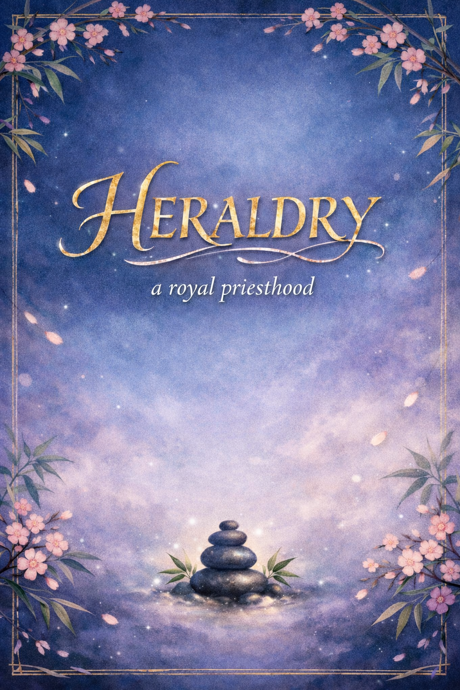
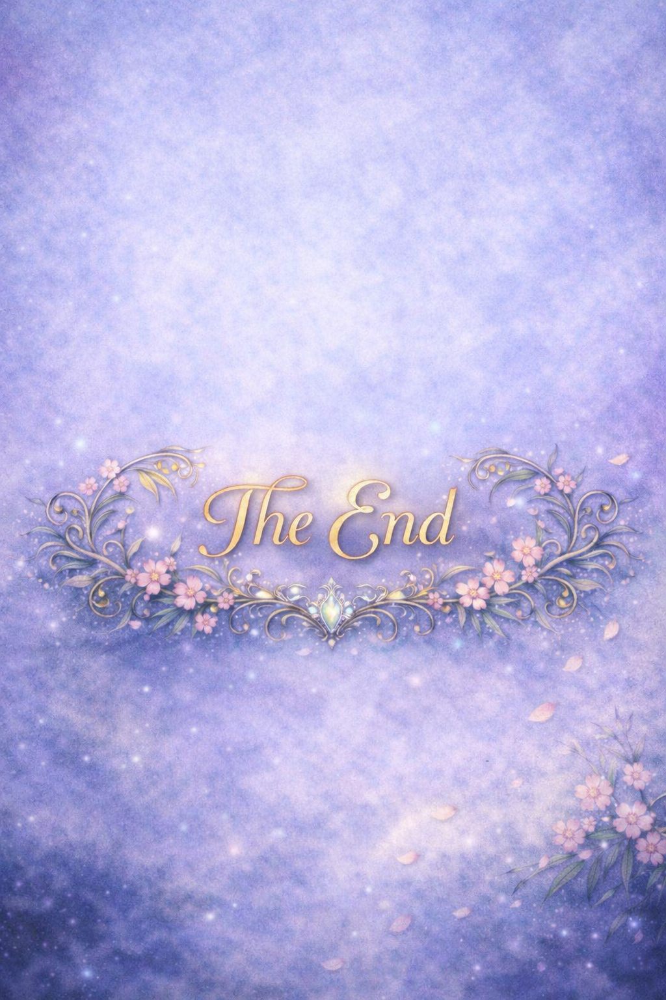

Dear Angel Hill,
I wanted to send this letter of encouragement. Sorry this took so long. I had a pile of school projects, so I had to push this back, and then the holidays got busy with travel. But after our K-D, I really wanted to follow through and write to you to encourage you to push yourself to find passions you genuinely care about and to deliberately give them time.
Whether or not you will immediately excel, because growth requires space. Who’s to say what talents you haven’t discovered yet simply because you never gave them enough time? And who’s to say how God might use those gifts—not only to help you grow, but to strengthen the people around you?
The good side of this is that you can create your own metrics—standards that are meaningful to you. You are a very encouraging sister. I think you have a real heart for encouraging others, and it shows. I also know that you want to become a better Bible talk leader. So start there.
Whatever you decide to pursue, I’m confident that if you give it time and consistency, you will excel.
Perfectionism can make it hard to start. But excellence doesn’t come from waiting until you’re good at something—it comes from beginning when you’re not. If you step into things consistently, even imperfectly, I genuinely believe you will grow into them.
Keep growing. Try new things—not just in structured spaces, but in the places you choose for yourself. That’s often where calling becomes clear.
P.S. Did you ever start junk journaling?
P.P.S. Did you ever start reading Yumi and the Nightmare Painter?
I’m always trying to get more people into Brandon Sanderson’s books so I have more people to talk too about them .
